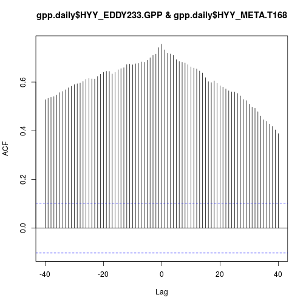

plot of chunk unnamed-chunk-14
In this session we will tackle the issue of dates and time-series.
Time-series are everywhere in environmental data. At there most basic time-series data consist of two columns (vectors) of data. The first is the date-time column (plotted as X-axis on graph) and the second column is the variable of interest that changes as a function of time.
There are two things we should keep in mind when working with time-series data. Firstly it is easiest to get dates into the correct datetime format as soon as possible, this way we can let the computer do the hard work when it comes to plotting etc. Secondly, we should keep in mind is that there are any number of data analysis and statistical methods specifically designed for time-series data. There are also caveats related to using standard statistical techniques (e.g. linear regression) to time-series data, so watch out for these!
In this session we will explain how R handles dates, and we will also look at auto-correlation and cross-correlation of time-series, which are two concepts that are great importance in time-series analysis and find application in a number of different places (e.g. Durbin Watson statistic, ARIMA models, eddy co-variance calculations etc).
The simplest representation of dates in R, is the suitably named date object. You can create one of these by converting a character of correct form e.g.
Use the as.Date() function to convert a.great.date.char to a.great.R.date
a.great.char.date <- "2017-10-28"
typeof(a.great.char.date)## [1] "character"print(a.great.char.date)## [1] "2017-10-28"a.great.R.date <- as.Date(a.great.char.date)
print(a.great.R.date)## [1] "2017-10-28"These variables may look similar, so why don't we just use the character representation "2017-10-28" rather than the special date object? One example of the usefulness of dates is the fact that we can perform arithmetic with dates. Try it out; what is the difference between the date today Sys.Date() and a.great.R.date?
time.diff = Sys.Date() - a.great.R.date
print(time.diff)## Time difference of 477 daysYou can also use the Sys.time() function to print the current date
Sys.Date()## [1] "2019-02-17"We can use a similar function to print out the current time and date
Sys.time()## [1] "2019-02-17 21:26:15 EET"This is referred to as a datetime object, and is the main object type that we will deal with. Datetime objects objects contains date, time and also specifies the local timezone. We are typically interested in datetimes, so we will continue with those in this session. However keep in mind that a simple date object exists if you want to analyse data on a daily time-step.
Let's inspect a datetime object to find out what we are dealing with:
just.before <- Sys.time()
str(just.before)## POSIXct[1:1], format: "2019-02-17 21:26:15"In R, datetimes are either categorised as POSIXct or POSIXlt, which are the different methods R uses to store the information.
Can you convert just.before from POSIXct to a POSIXlt?:
just.before.lt <- as.POSIXlt(just.before)
str(just.before.lt)## POSIXlt[1:1], format: "2019-02-17 21:26:15"So what's the difference then?
POSIXlt stores dates as lists (remember those?). Whereas POSIXct stores dates as the number of seconds that have elapsed since a particular date (1 January 1970, which you can read all about here the unix Epoch).
So when to use which? In all honesty I am not 100% sure. However as POSIXct takes less memory and is somewhat simpler then perhaps that is the preferred option.
Let's see how we would read in some dates using real data. We have used this data before! GPP is an estimate of CO2 exchange of tree canopies:
gpp<-read.csv('../data/gppsmeardata_20160101120000.csv',header = T,sep = ',',dec='.')
head(gpp)## Year Month Day Hour Minute Second HYY_EDDY233.GPP
## 1 2016 1 1 0 0 0 0.430
## 2 2016 1 1 0 30 0 0.318
## 3 2016 1 1 1 0 0 -0.219
## 4 2016 1 1 1 30 0 0.220
## 5 2016 1 1 2 0 0 0.123
## 6 2016 1 1 2 30 0 0.478Our task is to take the various columns of date and time information and convert these to a vector of type datetime. Let's go step by step, we will start with a new character vector of date:
date.char<-paste(gpp$Year,gpp$Month,gpp$Day,sep = '-')do the same for time, but this time set the sep argument to ::
time.char<-paste(gpp$Hour,gpp$Minute,gpp$Second,sep = ':')combine the two, and convert to POSIXc datetime:
gpp$datetime<-as.POSIXct(paste(date.char,time.char,sep = ' '))we can also add the date as a separate column, which will be useful for plotting later on:
gpp$date<-as.Date(date.char)
head(gpp$date)## [1] "2016-01-01" "2016-01-01" "2016-01-01" "2016-01-01" "2016-01-01"
## [6] "2016-01-01"To make our life easier in the following selection we will use daily data:
gpp.daily <- aggregate(HYY_EDDY233.GPP ~ date, gpp, median)
head(gpp.daily)## date HYY_EDDY233.GPP
## 1 2016-01-01 0
## 2 2016-01-02 0
## 3 2016-01-03 0
## 4 2016-01-04 0
## 5 2016-01-05 0
## 6 2016-01-06 0Remember to stick to the midday data in the following sections...
A key aspect of analysing time-series data is understanding and dealing with history (or memory). History in the context of time-series refers to how current values (or future values) depend on past values. This is seen as trends in behaviour over time, and referred to as non-stationary in math jargon. Likewise stationary data has no trend, and both the mean and variability (variance) remains constant. Running a regression model with two non-stationary time-series can often lead to highly inflated R2 value, this is a common problem in economics and is known as spurious regression.
So how about our GPP data, is there a trend in time? As always, let's start with a graph...
When we graph time-series data, we can use the scales package to make our life easier.
library(ggplot2)
library(scales) We then use the scale_x_date function from scales to format the x-axis in 1 day time steps :
ggplot(gpp.daily,aes(x=date,y=HYY_EDDY233.GPP))+
geom_point()+ ylab("GPP [umol/m2/s]") +
scale_x_date(breaks = date_breaks('1 day'),
labels = date_format("%m-%d"))plot of chunk unnamed-chunk-14
It is impossible to read the x-axis here, so let's increase the time-step to more days, you can also change the date_format argument to %b-%d as well if you like:
ggplot(gpp.daily,aes(x=date,y=HYY_EDDY233.GPP))+
geom_point() + ylab("GPP [umol/m2/s]") +
scale_x_date(breaks = date_breaks('30 day'),
labels = date_format("%b-%d")) 
plot of chunk unnamed-chunk-15
Once we identify history in our data then we can start to do interesting things; we might attempt to remove the dependence (by differencing).
In simple terms auto-correlation is the correlation between a variable and itself shifted in time. The shift in time is referred to as the lag. Typically we compute auto-correlation for a whole range of lags, and then plot the output as an auto-correlation function, which is a plot of lag Vs correlation value. Confused? well let's walk through a manual example using our GPP data.
Lagging a variable simple shifts it in time. We can do that for our GPP data here and plot against the original time-series (which is shortened to the same length). Let's lag by 30 days and plot the output:
lag <- 30
n <- length(gpp.daily$HYY_EDDY233.GPP)
gpp.lag <- gpp.daily$HYY_EDDY233.GPP[1:(n-lag)]
gpp.short <- gpp.daily$HYY_EDDY233.GPP[(1+lag):n]
date.short <- gpp.daily$date[(1+lag):n]
df.lag <- data.frame(date.short,gpp.lag,gpp.short)
ggplot() +
geom_line(data = df.lag, aes(x = date.short,
y = gpp.short), color = "red") +
geom_line(data = df.lag, aes(x = date.short,
y = gpp.lag), color = "blue") +
ylab("GPP [umol/m2/s]") +
scale_x_date(breaks = date_breaks('30 day'),
labels = date_format("%b-%d")) plot of chunk unnamed-chunk-16
Auto-correlation is simply the correlation between these two variables (the time-series and its lagged version). The following function lags data and works out the correlation:
lag.corr <- function(ts, lag){
a <- ts-mean(ts)
n <- length(a)
b <- a[1:(n-lag)]
c <- a[(1+lag):n]
# this line is similar to cor function
sum(b * c)/sum(a^2)
}note that we do not use the simple cor function on our lagged data to work out correlation, because the strict definition means that we use this alternative method instead. Click here to find out about the differences and see where the function came from.
What's the GPP auto-correlation at 30 days?
lag.corr(gpp.daily$HYY_EDDY233.GPP,30)## [1] 0.6102147How about lag=0?
lag.corr(gpp.daily$HYY_EDDY233.GPP,0)## [1] 1that is equivalent to calculating the correlation of a time-series with itself!
There is no need to do compute all lag values manually, we can use the function acf( ) to automatically graph the autocorrelation function, just set the lag.max parameter to sensible value (maximum number of days),try it out on the midday gpp data:
z<-acf(gpp.daily$HYY_EDDY233.GPP,lag.max=100)
plot of chunk unnamed-chunk-20
You can see that for a whole bunch of lag values then we have significant correlation, this means (as is somewhat obvious) that our data shows auto-correlation i.e. trends over time.
Let's double check our manual calculation:
lag.corr(gpp.daily$HYY_EDDY233.GPP,25)## [1] 0.6464757z[25]##
## Autocorrelations of series 'gpp.daily$HYY_EDDY233.GPP', by lag
##
## 25
## 0.646So when might we use this result? Well zero auto-correlation of residuals is an assumption of linear regression models. In fact the Durbin Watson statistic specifically tests for this.
Differencing a time-series can be used to reduce auto-correlation. It is a simple idea, we just take the difference between adjacent values. We use the diff function in R to do this.
Try it out below:
gpp.diff <- diff(gpp.daily$HYY_EDDY233.GPP)Note that the length of gpp.diff is one less than the the length of the original GPP time-series. Let's add a NA so we can fit it into the original dataframe, and plot the output:
gpp.daily$gpp.diff <- c(gpp.diff, NA)
ggplot(gpp.daily,aes(x=date,y=gpp.diff))+
geom_point() + ylab("GPP difference") +
scale_x_date(breaks = date_breaks('30 day'),
labels = date_format("%b-%d")) ## Warning: Removed 1 rows containing missing values (geom_point).let's see what the acf plot looks like (note that we have to use the gpp.diff variable here not the dataframe, as acf fails for vectors with NA):
acf(gpp.diff,lag.max=100) Notice how different this acf plot is to the one for the undifferenced data? The rapid fall-off in the acf means that our data no longer remembers so much of its history.
Notice how different this acf plot is to the one for the undifferenced data? The rapid fall-off in the acf means that our data no longer remembers so much of its history.
So is the difference time-series stationary? well the mean stays constant, but the variabilty (variance) is still a funcion of time. So we cannot say that our time-series is stationary in variance. Transforming data (using e.g. square root) is typically used for dealing with changing variance, see here.
If you're working on time-series data, try differencing it and removing the trend to avoid the curse of spurious correlations.
What we have done so far is a little theoretical, how can we use this information to learn something about our data? For that we need a theory...
In the boreal regions we think that (air) temperature is really a key variable that precedes GPP seasonality. Therefore it is reasonable to assume that GPP lags temperature by some number of days. Can we show this? Can we even work out an estimate of the lag?
Let's load some temperature data:
T168<-read.csv('../data/T168_20160101120000.csv',header = T,sep = ',',dec='.')
head(T168)## Year Month Day Hour Minute Second HYY_META.T168
## 1 2016 1 1 0 0 0 -6.527667
## 2 2016 1 1 0 30 0 -6.520333
## 3 2016 1 1 1 0 0 -6.594666
## 4 2016 1 1 1 30 0 -6.551667
## 5 2016 1 1 2 0 0 -6.366000
## 6 2016 1 1 2 30 0 -6.122000There are some missing values in our temperature data, let's fill them in using interpolation before we move onto our next bit of analysis:
library(zoo)##
## Attaching package: 'zoo'## The following objects are masked from 'package:base':
##
## as.Date, as.Date.numericT168$HYY_META.T168i <- na.approx(T168$HYY_META.T168)
sum(is.na(T168$HYY_META.T168))## [1] 266sum(is.na(T168$HYY_META.T168i))## [1] 0Extract daily values, like our GPP above:
T168$date <-gpp$date
T168.daily <- aggregate(HYY_META.T168i ~ date, T168, max)
head(T168.daily)## date HYY_META.T168i
## 1 2016-01-01 -5.223000
## 2 2016-01-02 -12.015333
## 3 2016-01-03 -8.656333
## 4 2016-01-04 -14.159000
## 5 2016-01-05 -18.530333
## 6 2016-01-06 -23.453333When we plot GPP and temperature together, what do we see?
gpp.daily$HYY_META.T168 <- T168.daily$HYY_META.T168
ggplot() +
geom_line(data = gpp.daily, aes(x = date,
y = HYY_EDDY233.GPP), color = "red") +
geom_line(data = gpp.daily, aes(x = date,
y = HYY_META.T168), color = "blue") +
scale_x_date(breaks = date_breaks('30 day'),
labels = date_format("%b-%d")) plot of chunk unnamed-chunk-28
Now here comes the new bit, where we apply cross-correlation. Cross-correlation is just like auto-correlation, only we calculate lags between two different variables, at differing lags. This allows us to estimate the lag at which maximum correlation occurs.
Finally, time to try out the ccf and find out if GPP lags temperature:
ccf(gpp.daily$HYY_EDDY233.GPP,gpp.daily$HYY_META.T168,lag.max=40) Now this is a confusing picture. From these results is appears that temperature actually follows photosynthesis! How about if select just the spring recovery period?
gpp.spring.daily <-gpp.daily[25:180,]
ggplot() +
geom_line(data = gpp.spring.daily, aes(x = date,
y = HYY_EDDY233.GPP), color = "red") +
geom_line(data = gpp.spring.daily, aes(x = date,
y = HYY_META.T168), color = "blue") +
scale_x_date(breaks = date_breaks('30 day'),
labels = date_format("%b-%d")) plot of chunk unnamed-chunk-30
ccf(gpp.spring.daily$HYY_EDDY233.GPP,gpp.spring.daily$HYY_META.T168,lag.max=40)plot of chunk unnamed-chunk-31
Now that is more like it! The positive values imply that GPP lags temperature during the spring, as we would expect.